Skills
Languages/Frameworks
- C#
- C++
- JavaScript
- Java
- Python
- HTML
- CSS
- R
- SQL
- Qt
- Unity
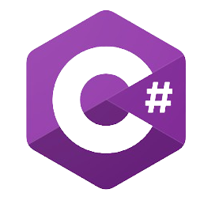
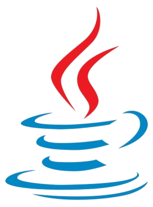
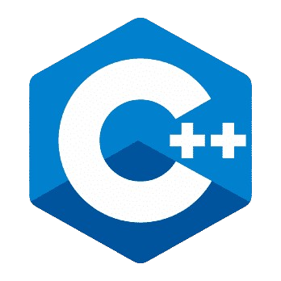

 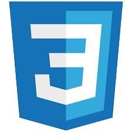
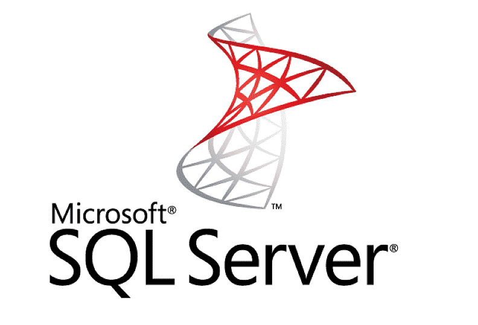
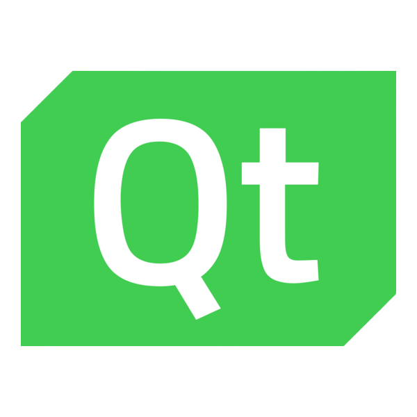
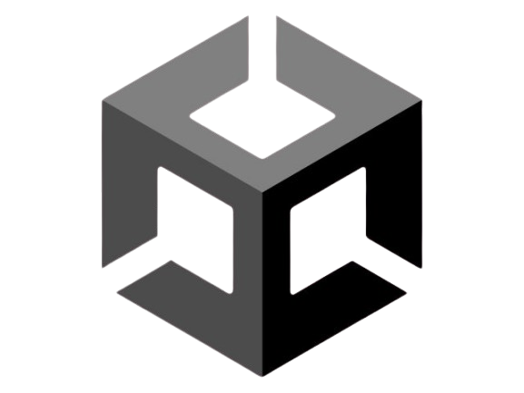
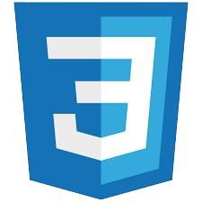
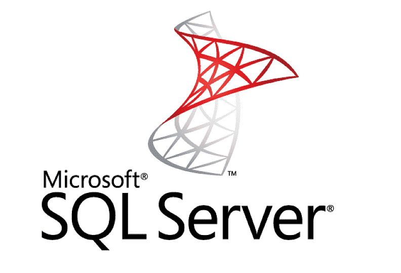
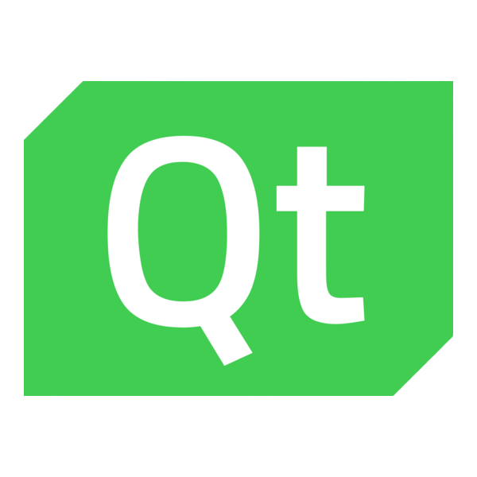
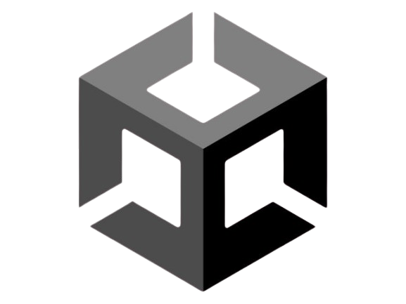
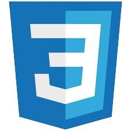
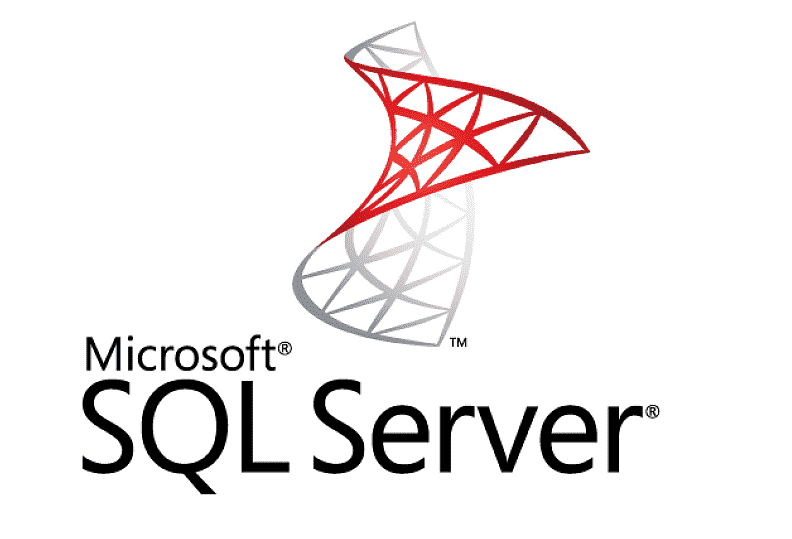
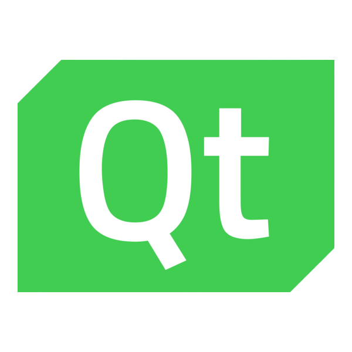
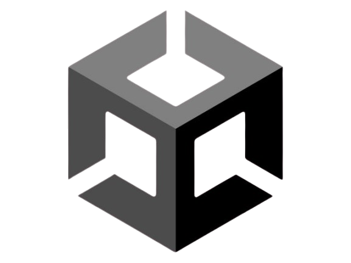
Software Dev Concepts & Tools
- OOP
- Relational Databases
- Multi-Threading
- Data Structures
- Versioning
- Basic C# Networking
- Self Documenting Code
- MVC
- Seperation of Concerns
- SOLID software principles
Tools
- Visual Studio
- GitHub
- VS Code
- IntelliJ IDEA
- Pycharm
- SSMS
- Docker Desktop
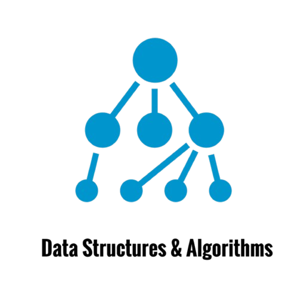
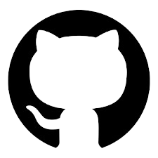
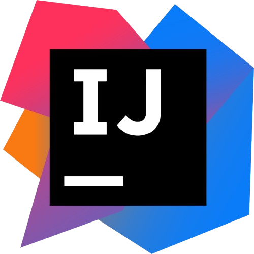
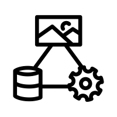
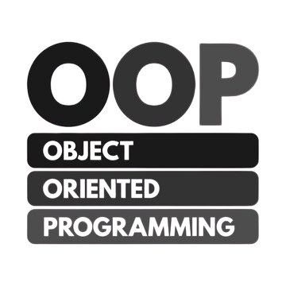
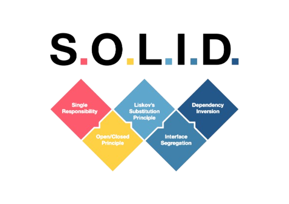
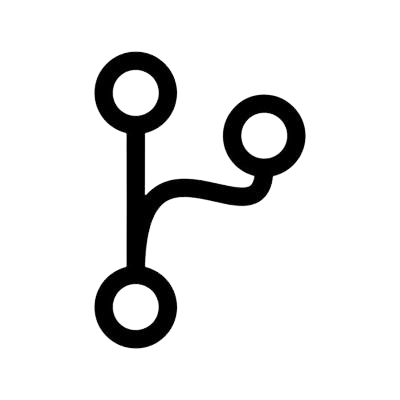
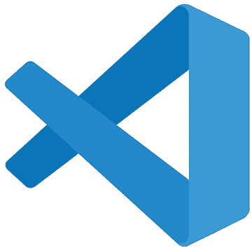
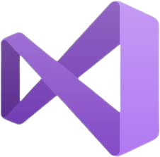
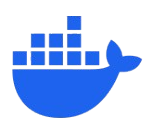
Courses
Below are CS courses I have taken at the University of Utah. Each has a non-exhaustive list of concepts and skills taught in that class.
Software Practice 2
5/1/2025
- C++
- Learned basics of C++; Insertion operator, Extraction operator, standard library, Scope resolution operator, arrays, etc.
- OOP in C++; Constructors, Destructors, Header files, overloading operators, copy constructor etc.
- No garbage collector; We learned about pointers and references, allocating and deallocating memory to avoid memory leaks.
- Pass by value is the default in C++.
- Documentation with Doxygen
- Enums in C++
- Environment
- Used Docker Desktop and Linux Ubuntu instance.
- Basic terminal commands. pwd, cd, kill, ls, etc.
- Compiling
- Makefiles and how to compile code from them.
- Create variables in Makefiles.
- Name: dependencies ->(Command to make it)
- Debugging with Makefile and -g flag.
- Code Style
- Maximize readability and maintainability.
- Abstraction, minimize complexity.
- OOP principles
- C++ allows multi-inheritance; But don't inherit from multiple classes to avoid dread diamond situation.
- Use scope resolution operator to specify methods.
- Interface is a class with only purely virtual methods. virtual void MyMethod()=0;
- Use the virtual keyword to determine method at runtime not compile time. Allowing for the most derived method to be called, crucial for polymorphism.
- Object slicing: slices off fields or methods of a derived class when passed as a base class.
- Data Structures
- Maps, Arrays, Linked lists, Binary Trees in C++
- MVC
- MVC separates logic, UI, and user input.
- Use signals and slots in Qt to interact between the view and the model.
- Testing
- TDD; Cost to fix bug in requirements stage is 30x less expensive than in production phase.
- Googletest
- ASSERT_EQ(x.size(), y.size());
- Error Handling
- Exceptions in C++
- Try, catch
- Software Engineering
- Roles in Software: customer, manager, developer, tester, user.
- Design: Unified Modeling Language (UML)
- Software development methodologies: Waterfall, Agile, Kanban
- Waterfall: Makes one pass from idea to final product. Requirements -> Design -> Implementation -> Integration and Testing -> Maintenance. Use Waterfall when requirements are clear and fixed and developer turnover is high.
- Agile: Mindset and values of how to develop software. Individuals over processes, working software over comprehensive documentation. (Agile Manifesto)
- Scrum and Kanban are flavors of Agile mindset. Scrum uses sprints to organize development cycles and utilizes daily standup.
- Kanban limit the number of work in progress on tickets.
- Qt
- Qt is a C++ UI framework which can create widget and desktop applications.
- Use signals and slots to interact with UI.
- Function and method pointers.
- Qt has many classes in the standard library to make UI development easier.
- Team Skills
- In the second half of the course we combined into teams of 5 to practice different software development methodologies.
- Created a sprite editor using Waterfall approach in Qt.
- Created RegexTrainer using Scrum/Kanban approach in Qt.
- Versioning
- Used git bash
- Learned a lot about versioning with branches and working on files within large teams.
Software Practice 1
8/28/2024
- Networking
- Networking in C# uses sockets as the underlying structure.
- TCP ensures reliable and ordered data delivery.
- GUI updates require "Invoke" for cross-thread operations.
- Debugging
- Use IDE tools like breakpoints, watch variables, and the call stack.
- Debug by isolating issues and reproducing errors.
- Databases
- SQL stands for Structured Query Language.
- Join tables to find related data, e.g., professors teaching a student.
- ACID ensures reliable transactions (e.g., Atomicity).
- Schema design prevents data duplication and nulls.
- Good Software Practices
- Write self-documenting, DRY code.
- Follow SOLID principles for maintainability.
- Use Git for version control: add, commit, push, merge.
- Test early and often; most errors occur during modifications.
- Optimization
- Don’t optimize prematurely; focus on readability.
- MVC
- MVC separates logic, UI, and user input.
- Applied in projects like Snake and Spreadsheet.
- TDD
- Write tests before coding (TDD).
- Code coverage should aim for 80-90%.
- C#
- Lambda expressions (e.g., "(x) => x + 5") simplify logic.
- Blazor builds interactive UIs with C#.
- Miscellaneous
- Ethics: The end user is the main stakeholder.
- Pair programming enhances quality and collaboration.
- Use JSON for data exchange and "ref" for parameter modification.
- HTTP and HTML
- HTTP requests include methods, headers, and body.
- HTML basics: <div>, <p>, and "class" attributes.
- CSS styles HTML via external or inline stylesheets.
- Versioning
- Version control tracks changes and prevents conflicts.
Data Structures and Algorithms
1/6/2024
- Data Structures
- Arrays: A contiguous block of memory, offering fast indexing but fixed size.
- Linked Lists: A linear structure where elements are connected by pointers.
- Stack: A LIFO (Last In, First Out) data structure
- Queue: A FIFO (First In, First Out) structure
- Graphs: Represent networks of nodes and edges.
- Binary Heap: A complete binary tree structure used to implement priority queues efficiently.
- Binary Tree: A tree where each node has at most two children, used in searching and hierarchical data storage.
- HashTables/HashMaps: Provide fast lookups by hashing keys to indices in an array.
- Huffman Trees: Used for data compression by assigning variable-length codes to input characters based on frequencies.
- Algorithms
- Sequential Search: A simple search method that checks each element in order.
- Binary Search: An efficient search algorithm for sorted data, with O(log n) complexity.
- Bubble Sort: A basic sorting algorithm that repeatedly swaps adjacent elements until sorted.
- Insertion Sort: Builds the sorted array one element at a time by inserting elements into their correct positions.
- Selection Sort: Sorts by repeatedly finding the smallest element and moving it to the front.
- Quick Sort: A divide-and-conquer algorithm that uses a pivot to partition the array and recursively sort partitions.
- Merge Sort: A stable, divide-and-conquer algorithm that merges sorted subarrays into a single sorted array.
- Depth First Search (DFS): Traverses graph/tree structures deeply along branches before backtracking.
- Breadth First Search (BFS): Explores graph/tree structures level by level, ideal for finding the shortest path.
- Dijkstra's Algorithm: Finds the shortest path in a graph with non-negative edge weights.
- Tree Traversal Algorithms: Methods like in-order, pre-order, and post-order for visiting tree nodes systematically.
Searches
Sorts
Graph Algorithms
Discrete Structures
1/6/2024
- Propositional Calculus
- Truth Tables: Evaluate logical expressions systematically.
- Logical Equivalence: Identify when two statements are logically the same.
- Tautology/Contradiction: Statements always true or false.
- Boolean Algebra: Operations like AND, OR, NOT.
- Conditionals: Statements involving "if-then" logic.
- Negation: Reversing a statement's truth value.
- Digital Circuits
- Logic Gates: Basic components like AND, OR, NOT.
- Circuit Simplification: Make circuits equivalent but simpler.
- Predicate Calculus
- Variables and Domains: Define and interpret variables.
- Quantifiers: Use universal and existential quantifiers.
- Counter-Examples: Validate or refute propositions.
- English to Quantified Logic: Translate complex statements.
- Logical Arguments
- Argument Form: Structure of logical reasoning.
- Premises/Conclusion: Components of an argument.
- Rules of Inference: Logical steps in reasoning.
- Proofs
- Direct Proof: Prove by straightforward reasoning.
- Proof by Contradiction: Establish by refuting the opposite.
- Set Theory
- Membership, Equality, Subset: Basic set concepts.
- Cardinality: Size of a set.
- Set Operations: Union, Intersection, Difference.
- Venn Diagrams: Visualize set relationships.
- Functions
- Domain/Codomain: Input and output sets.
- Injective, Surjective, Bijective: Function properties.
- Composition: Combining functions.
- Sequences
- Arithmetic/Geometric Sequences: Types of sequences.
- Recurrence Relations: Relating terms to predecessors.
- Summation/Product Sequences: Aggregating terms.
- Mathematical Induction
- Base Case: Verify initial statement.
- Inductive Step: Prove general case.
- Counting/Combinatorics
- Product/Sum Rules: Counting principles.
- Pigeonhole Principle: Prove unavoidable results.
- Permutations/Combinations: Arrange and select items.
- Relations
- Reflexivity, Symmetry, Transitivity: Relation properties.
- Equivalence Classes: Group related elements.
Accelerated Intorduction to OOP
8/28/2023
- Variables
- Understanding data storage and types in programming.
- Assigning values to variables.
- Classes
- Defining blueprints for creating objects.
- Class structure: fields, methods, and constructors.
- Objects
- Instances of classes with specific data and behavior.
- Interacting with object methods and properties.
- Encapsulation
- Hiding implementation details and exposing necessary parts of the object.
- Using access modifiers like public, private, and protected.
- Inheritance
- Creating new classes based on existing ones.
- Reusing and extending functionality of parent classes.
- Polymorphism
- Using a single interface to represent different types of objects.
- Method overriding and overloading.
- Abstraction
- Hiding complex logic and showing only essential features.
- Using abstract classes and interfaces.
Currently Taking:
1/6/2025